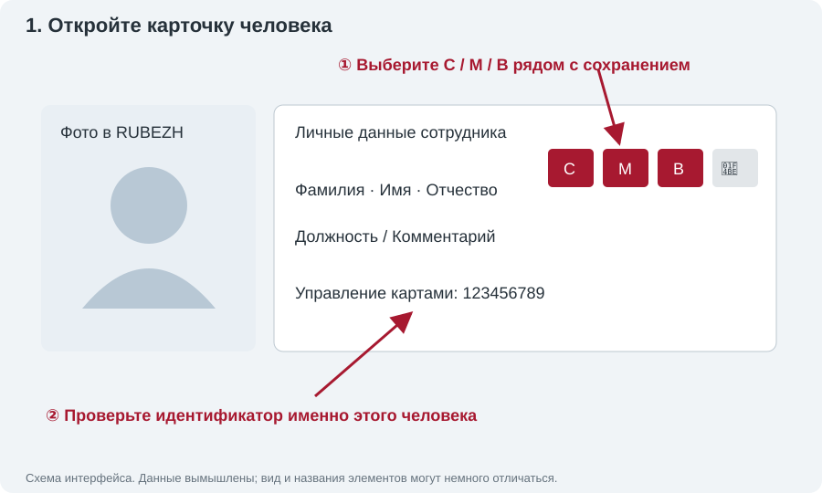
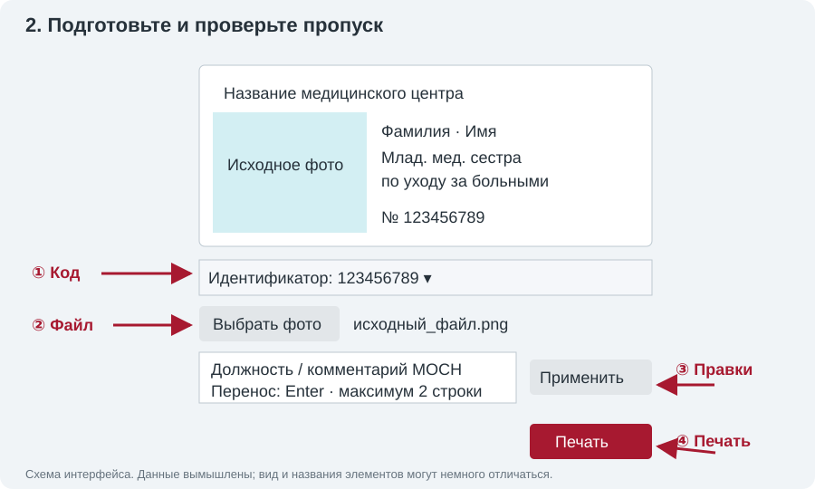

RUBEZH STRAZH · инструкция оператора
Как подготовить и напечатать пропуск
От открытой карточки человека до готового пропуска. Установка описана отдельно в README из архива релиза.
1. Откройте нужного человека
Откройте карточку сотрудника или посетителя в RUBEZH. Проверьте ФИО и табельный номер. В блоке «Управление картами» должен быть хотя бы один идентификатор, назначенный именно этому человеку. После добавления идентификатора дождитесь его появления в карточке; расширение проверяет этот блок заново.

| Кнопка | Что готовит | Фото |
|---|---|---|
| С | Пропуск сотрудника с должностью и табельным номером | Обязательно |
| М | Пропуск МОСН; текст комментария, при его отсутствии — должность | Обязательно |
| В | Временный пропуск | Не требуется |
Нажмите нужную кнопку. Откроется отдельное окно предпросмотра. Не закрывайте исходную карточку и не переходите в ней к другому человеку до отправки печати.
2. Выберите идентификатор и исходное фото
В списке «Идентификатор» выберите код, который нужно напечатать. Если код один, он выбран автоматически. Несколько кодов не означают несколько печатей: печатается только выбранный. Список обновляется автоматически и проверяется перед печатью.
Для С/М нажмите «Выбрать фото» и выберите исходный обрезанный файл JPG, PNG, WebP или BMP. Подтвердите выбор в обычном окне файлов. Фото со страницы RUBEZH не используется; не загружайте снимок уже напечатанного пропуска. Изображение автоматически вписывается с обрезкой по центру, без растяжения. Проверьте, что лицо и волосы не обрезаны. «Заменить фото» позволяет выбрать другой файл.

После выбора файла дождитесь обновления изображения: окончательный предпросмотр формирует SDK по нативному CSD. Подготовка предпросмотра не отправляет команду печати. Для В этот шаг с фото отсутствует.
3. Проверьте должность или комментарий МОСН
Поле «Должность на пропуске» доступно для С; для М оно называется «Комментарий на пропуске МОСН». Это локальная правка макета — запись человека в RUBEZH не меняется.
«Оператор» → «Опер.», «Медицинская сестра» → «Мед. сестра», «Младшая» → «Млад.» сокращаются автоматически. Остальные известные слова сокращаются при нехватке ширины. Строка переносится по пробелам, длинное составное слово — по существующему дефису. Названия врачебных специальностей, неизвестные слова и смысловые уточнения не удаляются. Максимум — две строки, исходный размер шрифта сохраняется.
Для ручной правки измените текст; Enter задаёт перенос. Нажмите «Применить» и дождитесь нового SDK-предпросмотра. После ввода печать заблокирована до применения. Если текст не помещается в две строки или превышает 200 знаков, сокращайте понятные вам слова; третья строка не печатается и не обрезается молча.
Примеры: «Млад. мед. сестра по уходу за больными»; «Зам. глав. врача по экон. вопр.». Проверьте, что сокращение не делает должность двусмысленной.
4. Отправьте одну печать
- Убедитесь, что принтер готов, на дисплее нет ошибки, а другое задание (в том числе iDesigner) не выполняется.
- Проверьте ФИО, код, фото, должность/комментарий и обе строки. Если макет неверный — не печатайте.
- Нажмите «Печать» один раз. Дождитесь сообщения о завершении и выдачи карточки. Кнопка блокируется от повторного нажатия.
- Проверьте готовую карточку: предпросмотр не гарантирует физическое качество печати. Если всё правильно, закройте окно и переходите к следующему человеку.
«Отмена» закрывает подготовку до печати. Она не отменяет уже отправленное аппаратное задание; во время выполнения элементы заблокированы.
Если не получается
- Не появляются кнопки С/М/В
- Обновите открытую страницу RUBEZH после обновления расширения. Проверьте, что открыта карточка человека, а не общий список. Адрес сервера должен совпадать с настройкой расширения.
- Нет идентификаторов
- Добавьте или проверьте код в «Управление картами» нужного человека. Если исходная карточка закрыта или открыта для другого человека, печать блокируется.
- Кнопка «Печать» недоступна
- Нужно выбрать фото для С/М, иметь идентификатор, применить правки текста и дождаться SDK-предпросмотра. Прочитайте сообщение под макетом. Временный пропуск не требует фото.
- Текст длиннее двух строк
- Сократите его вручную, уберите лишние пробелы и ненужный третий перенос. Не удаляйте существенное название специальности. Нажмите «Применить».
- Нужно обновить мост / мост недоступен
- Обратитесь к установке в README релиза: расширение и мост должны поддерживать одну версию протокола. Не переустанавливайте и не перезапускайте мост во время движения принтера.
- Печать не подтверждена
- Новая отправка блокируется, чтобы не расходовать ленту повторно. Сохраните лог, проверьте дисплей и состояние принтера. Перезапуск моста допустим только после проверки и при неподвижном принтере.
Лог: откройте Win+R, вставьте %LOCALAPPDATA%\RubezhPrintBridge, нажмите Enter и найдите bridge.log. Отправьте его вместе с описанием времени попытки и фото результата. Лог может содержать старую историю — не удаляйте его перед обращением.